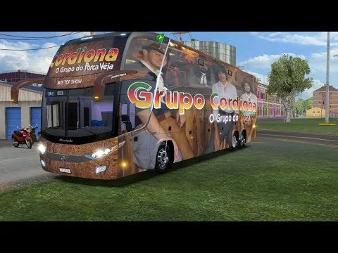

ABRIR REGISTRO ↗
SOM DE BAILE · AO VIVOBota o som.
Abrir o clipe com áudio
Bota o som.
Sente a vaneira.
Um pouco do palco — o resto é contigo.
A GENTE SE ENCONTRA NA ESTRADA
Próximo baile.
Folheia a agenda. Escolhe o teu mês.
NO PALCO
- Guitarra
- Contrabaixo
- Sanfona
- Afuxé
- Tamborim
- Caixa e prato
CORDIONA · ROTEIRO DE BAILESRS / BR
AGENDA
✳✳
✳
Perguntar sobre apresentações
Nenhuma data confirmada
para este mês.
FANDANGUEANDO POR AÍVIRA A FOLHA
TOCA NAS SETAS OU DESLIZA A FOLHA
MÚSICA TAMBÉM É ESTRADA02 / 03
Entre um baile
e outro, rodamos.
Registros públicos que acompanham a história da Cordiona pela estrada.
Miniaturas e títulos de vídeos públicos, mantidos com link para a fonte. A identificação do veículo atualmente em uso deve ser confirmada pela banda.
CORDIONA · AO VIVO A MÚSICA SEGUERaiz no peito.
Raiz no peito.
Baile adiante.
O Grupo Cordiona segue o legado musical de Porca Véia levando a música gaúcha aos palcos e salões. Vaneira, bugio, xamamé, trancão: cada noite tem seu próprio passo.
Ver clipes e bastidores no site oficial NO MESMO COMPASSOA estrutura
A estrutura
faz o show.
Do primeiro teste de som ao último acorde do baile.
Som e ferragens
Estrutura de palco e sonorização organizadas para o salão e para a festa.
Instrumentos
O timbre da gaita, da base e da percussão puxando o baile.
Banda e técnica
Músicos e equipe técnica trabalhando no mesmo compasso.
Estrada e transporte
A logística acompanha cada palco, cidade e encontro.